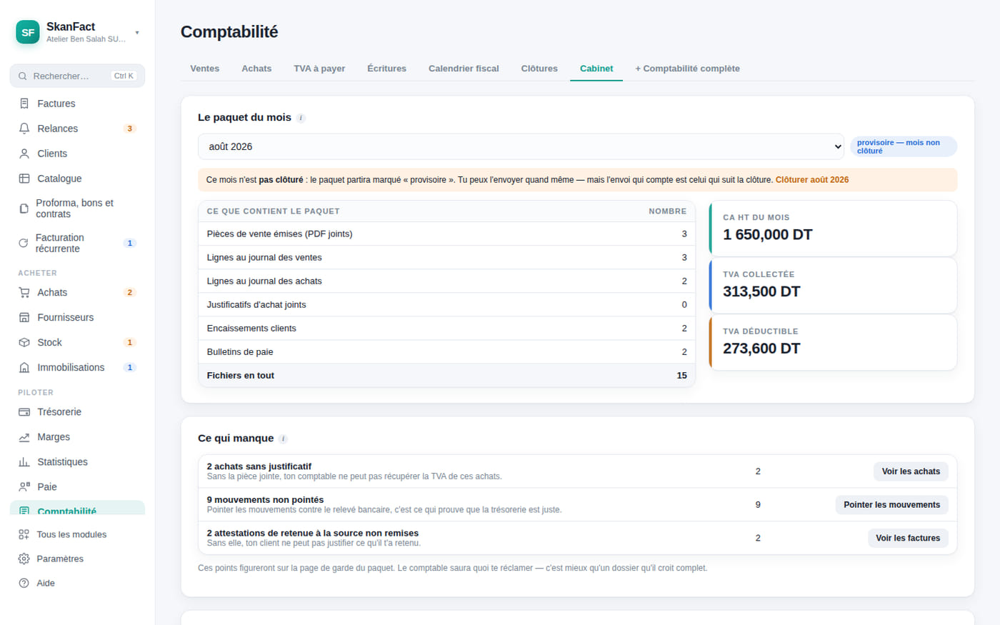

Accueil Votre comptable
Gratuit pour les cabinets
Il ne vous réclamera plus de papiers.
À la fin du mois, un bouton envoie tout le dossier d'un coup : les PDF de vos pièces, les journaux, les écritures comptables. Le fichier est chiffré pour son cabinet et lisible par lui seul.
L'application du cabinet est gratuite, sans limite de dossiers, pour toujours.

Côté entreprise
Trois gestes, une fois par mois.
Le paquet est un fichier ZIP ordinaire : votre comptable peut l'ouvrir avec son explorateur de fichiers même si SkanFact disparaît demain. Personne ne devient le seul lecteur possible de votre comptabilité.

Côté cabinet
Une application faite pour un portefeuille, pas pour un client.
SkanFact Cabinet range les dossiers de tous vos clients — y compris ceux qui n'utilisent pas SkanFact — et vous dit chaque matin qui n'a pas encore envoyé ses pièces.
Le fichier
Chiffré pour vous, et vérifiable.
Une clé par cabinet
Vous exportez votre fichier d'appairage, votre client l'importe, et il vous lit l'empreinte au téléphone. C'est ce qui garantit que le dossier vient bien de lui.
Une clé par envoi
Deux envois du même mois ne donnent jamais deux fichiers identiques, et un paquet compromis ne compromet pas les autres.
Rien de caché
L'en-tête reste lisible — entreprise, mois, destinataire — pour qu'un fichier mal rangé reste identifiable sans la clé.
À remettre à vos clients
Une page à leur envoyer, écrite pour eux.
Tout le reste de ce site s'adresse à vous. Vos clients, eux, n'ont pas besoin d'entendre parler de paquets chiffrés ni d'empreintes : ils ont besoin de savoir que leurs factures seront en règle et que vous recevrez leurs pièces. Cette page-là le dit en trois blocs — et rappelle les 20 % de la première année.
Vous ne touchez aucune commission, et c'est écrit noir sur blanc dessus : c'est ce qui rend la recommandation crédible.
Collez-le dans un message, un email ou une signature.
Vous êtes comptable ? Parlons-en.
Une démonstration, un dossier d’essai, une question sur le format d’export : écrivez-nous.
Mac et Windows · aucune carte bancaire · vos données restent chez vous